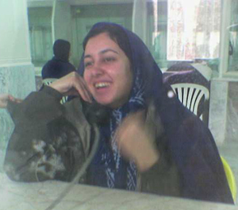

|
|
|
Browsing
Contact Us |
Campaigners |
Face to Face |
Tribune |
Interview |
News |
On the Web |
One Million |
Report
Farsi | Français | German | Italian | Spanish | العربية Also in this section
|
 For Maryam, Whose Spirit Remains FreeThursday 22 November 2007 By: Roja Fazaeli The news of Maryam’s arrest hit me full blow. Nothing can justify her arrest. If there was a person to symbolize piety, devotion and friendship it would be Maryam. I met Maryam in the NGO where both of us had started working in 2004. We were the same age, full of idealism and energy, with a thirst to do good. I saw Maryam for the first time sitting on the office chair talking to the man who ran the office about Beijing + 5 enveloped in her chador. Hearing her talk about Beijing + 5 with so much knowledge and clarity filled me with admiration for her and so we began talking. Soon she became my friend and confidante. She was selfless in the work she did and more knowledgeable than a PhD. Maryam’s kindness is unparalleled. We often laughed in anguish recalling the story of the old lady we had met who was lost in Haft-e Tir square. We found her wandering aimlessly trying to find her granddaughter who was to pick her up. However, she was not in the right place and did not know where to go, and being Turkish spoke very little Farsi. She had no address and knew only that her granddaughter worked in one of the Azad universities. Maryam patiently talked to her and tried to calm her down. We then went to the police that were nearby and asked for help. However, they turned us down as they said they see many “lost granny” cases. Maryam then called a few of the Azad universities asking for the lady’s granddaughter with little success. Maryam called her “mother”. At the end “mother” asked us to take her to a barbari bakery where she was sure her granddaughter would come to find her. We left her at the barbari bakery and told the shop keeper to keep an eye on her and if no one collected her to please call us on our mobiles. We heard nothing for a few hours and walked back to the barbari bakery, but she was already gone. Thinking of Maryam sitting in Evin fills me with sadness. Maryam who walked out with me from a job when our boss was unfair to me. Maryam whose understanding of rights and justice calls us all to action. Even her marriage is exemplary to all. She has no mehrieye, but equal rights in divorce, custody and choice in a place of residence amongst other rights. She lives by her beliefs with no compromise. Maryam has been in Evin before both as a reporter and as a prisoner. She was last arrested in March 4th 2007 with 32 other women’s rights activist for having peacefully protested the trial of five women’s rights activist outside Branch 6 of the Revolutionary Court in Tehran. At that time she narrated her experience as a prisoner like this: ….I still do not believe that I am back to the women’s prison, I am angry since they have separated the three of us from the others without any court case or legal explanation, but I am so delighted to see the prison again that I’ve forgotten my anger. I am not the young journalist who entered the prison with numerous previous arrangements. I am a prisoner, one of the 33 women, some of them are in solitary confinement, their crime is their desire for equal rights. Maryam’s narrative depicts her true character as a human rights activist. She continues: …We enter the room (cell), most of them wake up, apart from Leila who is no more than 20 years old. The rest are above 40 years and a few above 60. One by one they open their eyes and it is as if they felt sorry for us being so young, they formed a circle around us. Seeking the moment, I began telling them about the Campaign and women’s rights. They could not believe, the women whose noise of hammering fists they had heard are those journalists, social workers and lawyers who work for women’s rights. We tell them that many of the women who are now in solitary confinement are those working on the cases of Kobra Rahmanpour, Ashraf Kolhar and Akram Ghavidel. To our surprise they tell us that the woman who body searched us down stairs was Akram Ghavidel. Apparently prisoners who are well-behaved get to help in the daily running of the prison. This is unbelievable. Everything is like a movie. Outside these walls Asiye Amini works for Akram’s freedom and this side of the prison Akram has to take Asiye to a solitary cell, search her and lock the door to her cell. I don’t know whether to laugh or cry. When I tell Akram, she doesn’t believe it “the same woman who went and saw my child? Swear to god, I didn’t recognise her…”, both our bodies tremble. It is our bodies that now tremble, thinking of Maryam back in prison. Maryam has had many sleepless nights writing for a cause she believes in. May we who have been inspired by her work for rights and equality now respond. |